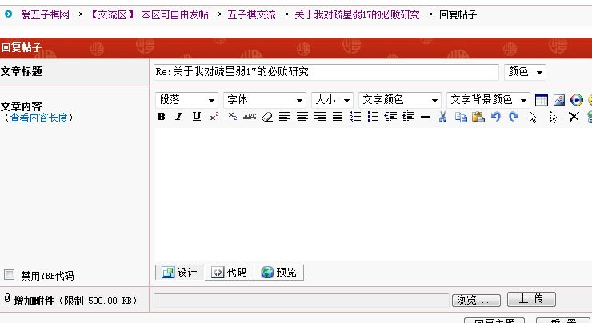
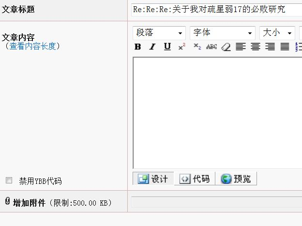
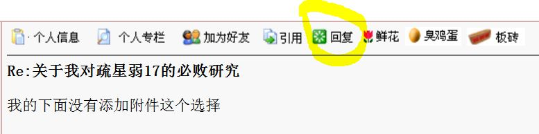

关于我对疏星弱17的必败研究
#1 <font color="red">关于我对疏星弱17的必败研究</font> 作者：离子阵阵雨 发表时间：2011-8-20 17:55:49
这个17是必败的，我忘了在哪里听说是黑弱，但并不是黑必败，也就随便拆拆了，发现黑确实必败，但是我并不会发棋谱，只能以一问一答的形式来说明我的变化，对哪个点有问题的同学可以说下。咳咳，研究出这个必败的绝对不止我一个，甚至有人说15就已经必败了，囧里个囧，神人果然有很多，我们这些小棋手只能说点小变化了- -额。。。。。。=======上图对应的爱五子棋谱代码如下，以便你拆解：========
h8h9j10i9i8g9j9j8h10k10f9e8f7f8d8k7h7i6
======================================================
［ 小红眼镜 于 2011-8-20 18:07:49 时花20金币送鲜花一朵］
［ 雨一直下 于 2011-8-20 21:42:46 时奖励此帖[金币加 100 威望加1］
［ 隐藏菜系 于 2011-8-20 22:19:25 时花20金币送鲜花一朵］
［ 掌棋如烟 于 2011-8-22 18:58:17 时花20金币送鲜花一朵］
［ 掌棋如烟 于 2011-8-22 18:58:28 时花20金币送鲜花一朵］
［ 掌棋如烟 于 2011-8-22 18:59:51 时花20金币送鲜花一朵］
［ 掌棋如烟 于 2011-8-22 18:59:55 时花20金币送鲜花一朵］
［ 掌棋如烟 于 2011-8-22 18:59:58 时花20金币送鲜花一朵］
［此帖子已被 屏蔽 在 2011-11-16 12:36:10 编辑过］
#2 Re:关于我对疏星弱17的必败研究 作者：小红眼镜 发表时间：2011-8-20 18:07:29
 来来，小离子，我告诉你肿么发谱。。。。把你的谱压缩一下。。。然后点击这个帖子上边那个回复帖子，别用下边这里的快速回复。
来来，小离子，我告诉你肿么发谱。。。。把你的谱压缩一下。。。然后点击这个帖子上边那个回复帖子，别用下边这里的快速回复。
然后在下边这个回复框里面下边有个添加附件选项。。。咳咳。你添加就行了。。

#3 Re:关于我对疏星弱17的必败研究 作者：离子阵阵雨 发表时间：2011-8-20 18:07:53
打击啊打击，不带这么打击人的，我第一次发东西啊，第一次不做伸手党啊，给点力吧，即使你知道是必败的，也提些问题吧。。。。
#4 Re:关于我对疏星弱17的必败研究 作者：离子阵阵雨 发表时间：2011-8-20 18:11:56
我不想发棋谱啊，我觉得只有讨论才有学习的氛围，而且打包好麻烦啊，如果棋谱大点的话我也不会弄分卷啥的#5 Re:关于我对疏星弱17的必败研究 作者：小帮帮 发表时间：2011-8-20 19:04:48
除了地毯繁琐一点，拆起来好像难度不算大
#6 Re:关于我对疏星弱17的必败研究 作者：小元 发表时间：2011-8-20 19:30:56
同意楼上
#7 Re:关于我对疏星弱17的必败研究 作者：离子阵阵雨 发表时间：2011-8-20 20:06:29
 打击我积极性啊，你们问几个点会死啊
打击我积极性啊，你们问几个点会死啊
#8 Re:关于我对疏星弱17的必败研究 作者：自来水 发表时间：2011-8-20 20:38:38
 。。。要威望请劳动
。。。要威望请劳动
#9 Re:关于我对疏星弱17的必败研究 作者：离子阵阵雨 发表时间：2011-8-20 20:55:25
我什么时候说要威望了擦啊，我是来要回复和交流的擦得#10 Re:关于我对疏星弱17的必败研究 作者：花落无痕 发表时间：2011-8-20 21:13:08
好吧，就满足一下你想讲棋的愿望 请问这样怎么杀
请问这样怎么杀
=======上图对应的爱五子棋谱代码如下，以便你拆解：========
h8h9j10i9i8g9j9j8h10k10f9e8f7f8d8k7h7i6e7
======================================================
#11 Re:Re:关于我对疏星弱17的必败研究 作者：离子阵阵雨 发表时间：2011-8-20 21:15:05
没找到增添附件的选项#12 Re:Re:Re:关于我对疏星弱17的必败研究 作者：花落无痕 发表时间：2011-8-20 21:23:51
看右下角
然后上传
#13 Re:关于我对疏星弱17的必败研究 作者：花落无痕 发表时间：2011-8-20 21:26:30
不是下面的“快速回复主题”，是需要点击楼上帖子上面的“回复”#14 Re:关于我对疏星弱17的必败研究 作者：离子阵阵雨 发表时间：2011-8-20 21:27:51
我的下面没有添加附件这个选择#15 Re:Re:关于我对疏星弱17的必败研究 作者：离子阵阵雨 发表时间：2011-8-20 21:30:59
不可能一个点一个点的说，我就说下大致进攻路线吧，你这个黑是黑石上的
=======上图对应的爱五子棋谱代码如下，以便你拆解：========
h8h9j10i9i8g9j9j8h10k10f9e8f7f8d8k7h7i6e7g7
======================================================
#16 Re:Re:关于我对疏星弱17的必败研究 作者：花落无痕 发表时间：2011-8-20 21:32:09
不是下面的“快速回复主题”，是需要点击楼上帖子上面的“回复”
#17 Re:关于我对疏星弱17的必败研究 作者：自来水 发表时间：2011-8-20 21:33:51
点击上方的回复文章才有
#18 Re:关于我对疏星弱17的必败研究 作者：花落无痕 发表时间：2011-8-20 21:35:15
不管是黑石还是白石，反正就那么几个可以下的点，你都说说吧
你前面不是一直在埋怨没有人问你点吗，我这是配合你
#19 Re:关于我对疏星弱17的必败研究 作者：离子阵阵雨 发表时间：2011-8-20 21:36:35
=======上图对应的爱五子棋谱代码如下，以便你拆解：========
h8h9j10i9i8g9j9j8h10k10f9e8f7f8d8k7h7i6e7g7g5f6h6h5k8l6m5l7
======================================================
#20 Re:关于我对疏星弱17的必败研究 作者：离子阵阵雨 发表时间：2011-8-20 21:37:22
擦啊我就是点的上方的回复文章，说过了没有没有啦啊#21 Re:关于我对疏星弱17的必败研究 作者：花落无痕 发表时间：2011-8-20 21:40:48
才看到，原来你的威望是 1 。好象是威望2以上才可以发的
#22 Re:关于我对疏星弱17的必败研究 作者：离子阵阵雨 发表时间：2011-8-20 21:43:06
=======上图对应的爱五子棋谱代码如下，以便你拆解：========
h8h9j10i9i8g9j9j8h10k10f9e8f7f8d8k7h7i6e7g7h6k8k9h5j7l6m5l8
======================================================
=======上图对应的爱五子棋谱代码如下，以便你拆解：========
h8h9j10i9i8g9j9j8h10k10f9e8f7f8d8k7h7i6e7g7k6h6g6f5i5k9g5f6
======================================================
［ 黄药师 于 2011-8-20 21:44:17 时奖励此帖[金币加 100 威望加1］
#23 Re:关于我对疏星弱17的必败研究 作者：雨一直下 发表时间：2011-8-20 21:43:28
现在威望2了，可以发了~~鼓励一下少年棋手，加油#24 Re:关于我对疏星弱17的必败研究 作者：花落无痕 发表时间：2011-8-20 21:46:54
现在威望3 了
#25 Re:关于我对疏星弱17的必败研究 作者：离子阵阵雨 发表时间：2011-8-20 21:53:17
 新建 WinRAR 压缩文件.rar其实我还是喜欢边问边答的样子来发棋谱，那样子比较有成就感
新建 WinRAR 压缩文件.rar其实我还是喜欢边问边答的样子来发棋谱，那样子比较有成就感［ 小红眼镜 于 2011-8-20 22:49:57 时花20金币送鲜花一朵］
#26 Re:关于我对疏星弱17的必败研究 作者：离子阵阵雨 发表时间：2011-8-20 21:54:38
帮忙看看能下载不能，第一次在这里发附件，手生#27 Re:关于我对疏星弱17的必败研究 作者：花落无痕 发表时间：2011-8-20 21:56:18
你现在不是成就感的问题了，是成就#28 Re:关于我对疏星弱17的必败研究 作者：花落无痕 发表时间：2011-8-20 21:58:12
而且是两个真实的成就：
1、会发附件了
2、获得了2个威望
这可是真实的成就。 而“成就感”只是一种感觉
#29 Re:关于我对疏星弱17的必败研究 作者：花落无痕 发表时间：2011-8-20 22:01:01
知恩回报，你首先应当感谢二位奖励你威望的管理员，还要感谢浏览并回复你帖子的坛友#30 Re:关于我对疏星弱17的必败研究 作者：听风吹雨 发表时间：2011-8-20 22:11:00
支持，加油
#31 Re:关于我对疏星弱17的必败研究 作者：dyccj 发表时间：2011-8-20 22:11:48

#32 Re:关于我对疏星弱17的必败研究 作者：离子阵阵雨 发表时间：2011-8-20 22:13:51
没那么夸张，附件我本来就会，只是不知道还有威望限制，不过感谢管理和支持我的朋友倒是真的
#33 Re:关于我对疏星弱17的必败研究 作者：秋叶散人 发表时间：2011-8-20 22:39:24
=======上图对应的爱五子棋谱代码如下，以便你拆解：========
h8h9j10i9i8g9j9j8h10k10f9e8f7f8d8k7h7i6g7e7
======================================================
这个分支谱里没有详解啊，怎么杀？
#34 Re:关于我对疏星弱17的必败研究 作者：离子阵阵雨 发表时间：2011-8-20 22:43:28
一般没有详解的基本都是可以简单杀了，我帮你看看#35 Re:关于我对疏星弱17的必败研究 作者：离子阵阵雨 发表时间：2011-8-20 22:44:54
有啊，怎么没有呢，话说怎么发图片#36 Re:关于我对疏星弱17的必败研究 作者：离子阵阵雨 发表时间：2011-8-20 22:47:57
哦，还真有我没弄出来的点，稍等下#37 Re:Re:关于我对疏星弱17的必败研究 作者：米 发表时间：2011-8-20 22:48:16
我觉得之所以有棋友对楼主的地毯还有疑问，可能是因为楼主的地毯里有个别的a字母是看到必胜自己手写上去的。这个黑17我也地毯了，且我没有用手写过任何一个a字母。因此，楼主的结论是正确的。建议棋友具体问哪个黑21，否则楼主不知道摆哪个图。#38 Re:关于我对疏星弱17的必败研究 作者：离子阵阵雨 发表时间：2011-8-20 22:50:31
哦，看错了。没有错误，只是a点标错了#39 Re:关于我对疏星弱17的必败研究 作者：离子阵阵雨 发表时间：2011-8-20 22:53:51
恩，大概把哪个点说下，我喜欢回答问题，当然必须在能力之内，感谢支持我的棋友，最近在做花月一二打，主要用来讲学用的，黄药师，你手上不是有很多娃娃么，我将骗招和错误都标上去了，对于一些进攻路线也进行了棋理说明，适合还不了解必胜的初学者#40 Re:关于我对疏星弱17的必败研究 作者：秋叶散人 发表时间：2011-8-20 22:58:05
=======上图对应的爱五子棋谱代码如下，以便你拆解：========
h8h9j10i9i8g9j9j8h10k10f9e8f7f8d8k7h7i6g7e7f10
======================================================
请问这个21怎么杀？
#41 Re:Re:关于我对疏星弱17的必败研究 作者：米 发表时间：2011-8-20 23:00:03
=======上图对应的爱五子棋谱代码如下，以便你拆解：========
h8h9j10i9i8g9j9j8h10k10f9e8f7f8d8k7h7i6g7e7f10l6m5k6j6k8k9j7h5j4
======================================================
这样杀
#42 Re:关于我对疏星弱17的必败研究 作者：离子阵阵雨 发表时间：2011-8-20 23:05:03
我觉得简单杀，黑有反么。。。。我还没用软件拆=======上图对应的爱五子棋谱代码如下，以便你拆解：========
h8h9j10i9i8g9j9j8h10k10f9e8f7f8d8k7h7i6g7e7f10l6m5k6j6l9
======================================================
#43 Re:关于我对疏星弱17的必败研究 作者：离子阵阵雨 发表时间：2011-8-20 23:06:44
啊，我跟米大师的不一样，我检查下#44 Re:关于我对疏星弱17的必败研究 作者：离子阵阵雨 发表时间：2011-8-20 23:10:13
 感谢秋叶散人提出的问题，补足了我棋谱的不足
感谢秋叶散人提出的问题，补足了我棋谱的不足
#45 Re:关于我对疏星弱17的必败研究 作者：离子阵阵雨 发表时间：2011-8-20 23:11:42
感谢秋叶散人提出的问题，补足了我棋谱的不足
#46 Re:关于我对疏星弱17的必败研究 作者：秋叶散人 发表时间：2011-8-20 23:59:55
=======上图对应的爱五子棋谱代码如下，以便你拆解：========
h8h9j10i9i8g9j9j8h10k10f9e8f7f8d8k7h7i6g7e7j7i7h6
======================================================
这个怎么杀？
#47 Re:关于我对疏星弱17的必败研究 作者：gerbo 发表时间：2011-8-21 0:03:25
 好可爱的LZ。。。
好可爱的LZ。。。
真F乐你啊。。居然一次性弄到两个威望。
#48 Re:关于我对疏星弱17的必败研究 作者：离子阵阵雨 发表时间：2011-8-21 0:03:41
=======上图对应的爱五子棋谱代码如下，以便你拆解：========
h8h9j10i9i8g9j9j8h10k10f9e8f7f8d8k7h7i6g7e7j7i7h6f5
======================================================左右都可杀，我记得这个棋谱上有啊，你再具体说说哪个点
#49 Re:Re:关于我对疏星弱17的必败研究 作者：离子阵阵雨 发表时间：2011-8-21 0:06:44
引用：
原文由 gerbo 发表于 2011-8-21 0:03:25 :
真F乐你啊。。居然一次性弄到两个威望。
我可是少年，应该用帅气形容哼，虽然我也不怎么帅气。。。
威望多了没用，只要能刚好够个数发个棋谱就够，多多回复和支持才是我想要的
#50 Re:关于我对疏星弱17的必败研究 作者：gerbo 发表时间：2011-8-21 0:36:17
你的运气太好了。我都 羡慕了~#51 Re:关于我对疏星弱17的必败研究 作者：侯军学棋 发表时间：2011-8-21 0:44:22
这样可以杀不.rar
#52 Re:Re:关于我对疏星弱17的必败研究 作者：屏蔽 发表时间：2011-8-21 0:54:59
引用：
原文由 侯军学棋 发表于 2011-8-21 0:44:22 :
你往后摆摆就知道这谱是如何坑爹的了……
#53 Re:Re:关于我对疏星弱17的必败研究 作者：离子阵阵雨 发表时间：2011-8-21 1:31:26
引用：不知道能不能杀，你给的棋谱有好多点没给出杀，只是刚开始全是c，后面A啊B啊就都全出来了，应该是没做完的谱吧
原文由 侯军学棋 发表于 2011-8-21 0:44:22 :
#54 Re:关于我对疏星弱17的必败研究 作者：岑小鱼 发表时间：2011-8-21 10:34:58
地毯了啊....厉害...
我想问的是...那么黑13~17到底该如何变化比较合适?
#55 Re:Re:关于我对疏星弱17的必败研究 作者：离子阵阵雨 发表时间：2011-8-21 14:14:24
引用：我认为黑15就太过保守了，可以选择一些更加积极有效的点
原文由 岑小鱼 发表于 2011-8-21 10:34:58 :地毯了啊....厉害...
我想问的是...那么黑13~17到底该如何变化比较合适?
#56 Re:关于我对疏星弱17的必败研究 作者：花落无痕 发表时间：2011-8-21 14:52:22
黑13会不会有更加积极的点位？ 比如这个
=======上图对应的爱五子棋谱代码如下，以便你拆解：========
h8h9j10i9i8g9j9j8h10k10f9e8g12
======================================================
#57 Re:关于我对疏星弱17的必败研究 作者：秋叶散人 发表时间：2011-8-21 20:09:46
=======上图对应的爱五子棋谱代码如下，以便你拆解：========
h8h9j10i9i8g9j9j8h10k10f9e8f7f8d8k7h7i6g7e7e5
======================================================
请教白怎么杀？
#58 Re:Re:关于我对疏星弱17的必败研究 作者：离子阵阵雨 发表时间：2011-8-21 20:23:55
引用：我的棋谱上有这个的杀法啊，虽然没有到43，但是白棋右面简单VCT了啊
原文由 秋叶散人 发表于 2011-8-21 20:09:46 :
=======上图对应的爱五子棋谱代码如下，以便你拆解：========
h8h9j10i9i8g9j9j8h10k10f9e8f7f8d8k7h7i6g7e7e5
======================================================请教白怎么杀？
#59 Re:关于我对疏星弱17的必败研究 作者：sonix 发表时间：2011-8-21 20:46:08
=======上图对应的爱五子棋谱代码如下，以便你拆解：========
h8h9j10i9i8g9j9j8h10k10f9e8f7f8d8k7f10
======================================================
这个17也必败了？
#60 Re:关于我对疏星弱17的必败研究 作者：秋叶散人 发表时间：2011-8-21 20:48:09
对哦！谢谢楼主！
#61 Re:关于我对疏星弱17的必败研究 作者：嵯峨 发表时间：2011-8-21 21:25:04
 lz太可爱了
lz太可爱了
#62 Re:Re:关于我对疏星弱17的必败研究 作者：离子阵阵雨 发表时间：2011-8-21 21:32:35
引用：我还在研究，不知要拆到猴年马月了
原文由 sonix 发表于 2011-8-21 20:46:08 :
=======上图对应的爱五子棋谱代码如下，以便你拆解：========
h8h9j10i9i8g9j9j8h10k10f9e8f7f8d8k7f10
======================================================这个17也必败了？
#63 Re:关于我对疏星弱17的必败研究 作者：五连达人 发表时间：2011-8-21 22:01:59
要必胜怕是太难#64 Re:关于我对疏星弱17的必败研究 作者：与世无争 发表时间：2011-8-22 18:53:44
==============================
此帖内容被屏蔽!
==============================
此帖被屏蔽 屏蔽于 2011-8-22 19:22:27
#65 Re:关于我对疏星弱17的必败研究 作者：小小亦默 发表时间：2011-10-27 10:35:54
没拆 随着思路随便提供个18
#66 Re:关于我对疏星弱17的必败研究 作者：道无为 发表时间：2011-11-16 11:06:50
==============================
此帖内容被屏蔽!
==============================
此帖被屏蔽 屏蔽于 2011-11-16 12:30:06并-20金币